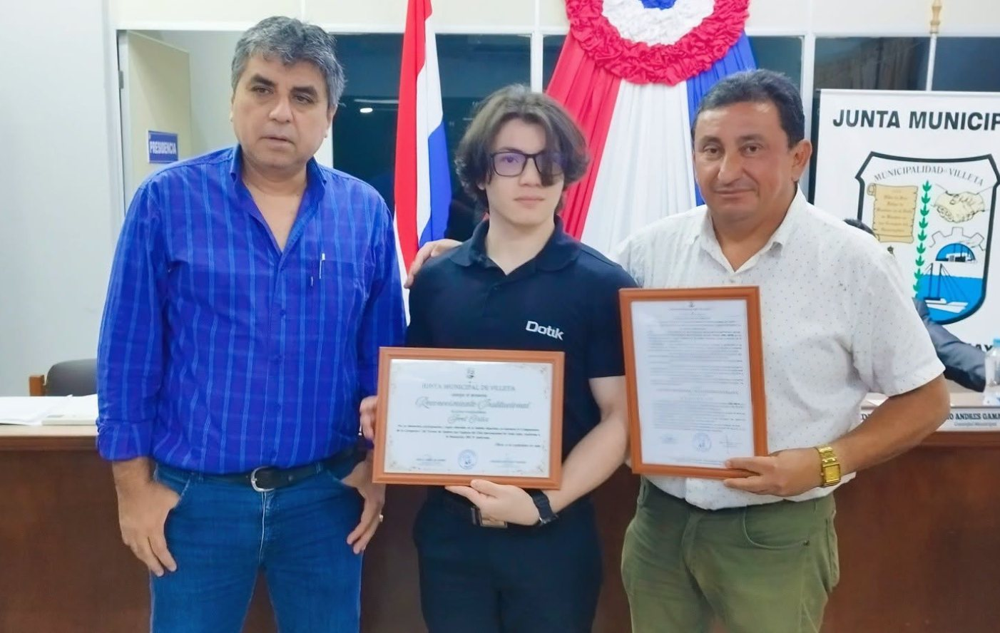
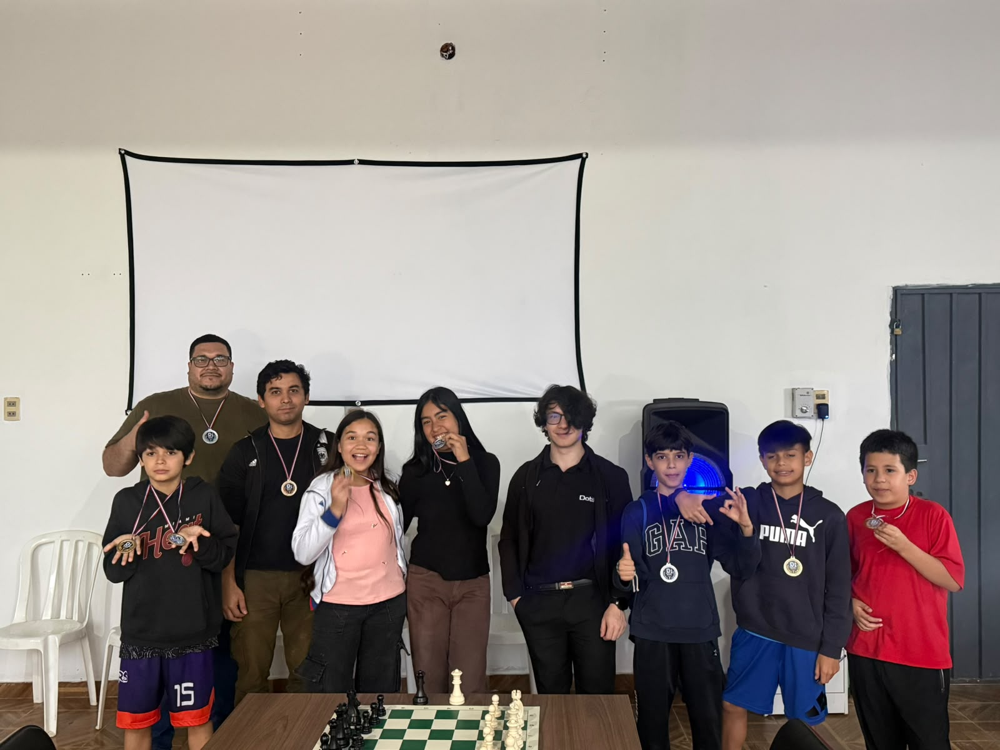

01
Sistemas para procesos comerciales
Ventas, inventario, clientes y operación en sistemas a medida, diseñados según cómo trabaja cada negocio.
Desarrollador full stack, fundador de Dotik e investigador en inteligencia artificial. Construyo software que conecta la operación de un negocio con sus datos, y uso la IA para entender lo que esos datos dicen.
Hace 6 años construyo software. Me interesa cómo funcionan las cosas por dentro: un proceso comercial, una base de datos, un modelo de IA o una partida de ajedrez.
Trabajo donde se cruzan el software, los datos y la gestión. Desarrollo sistemas a medida que reemplazan planillas y pasos manuales, analizo la información que generan y la uso para detectar oportunidades de mejora. Desde Dotik llevo esa forma de trabajar a empresas, emprendedores y profesionales independientes.
Ventas, inventario, clientes y operación en sistemas a medida, diseñados según cómo trabaja cada negocio.
Convertir registros dispersos en indicadores, tableros y decisiones concretas.
Asistentes, automatizaciones y modelos integrados en procesos reales.
Ordenar flujos de trabajo, roles e información antes de escribir una línea de código.
Leer los datos de un negocio para encontrar dónde se pierde tiempo, dinero o clientes.
Un sistema es más que su código: son personas, procesos, datos y reglas que interactúan. Primero entiendo el todo y después diseño las partes.
Entender el proceso antes de escribir código.
Prefiero arquitecturas simples, modulares y fáciles de cambiar. Separo responsabilidades, documento las decisiones y elijo cada tecnología según el problema.
Lo simple escala mejor que lo complejo.
Los datos son la memoria de una organización. Diseño cada sistema para que registre bien desde el primer día, y así poder medir, aprender y anticipar.
Sin datos confiables no hay decisiones confiables.
Entender el proceso tal como ocurre hoy, con sus atajos y sus cuellos de botella.
Identificar qué datos existen, cuáles faltan y qué indicadores importan.
Desarrollar el sistema: base de datos, backend, interfaz e integraciones.
Analizar el uso real y ajustar. Cada iteración es una nueva jugada.
Lo que uso en el día a día, de la interfaz a la base de datos y de los datos a los modelos.

Sitio para un cirujano especialista en pared abdominal en Asunción: especialidades, tratamientos, blog médico, solicitud de consultas y consultorios con mapa.
Visitar sitio ↗
Plataforma de planes de control de plagas en Ciudad del Este: suscripciones con cobro recurrente vía Bancard, inspección de 8 puntos, blog técnico y club de membresía.
Visitar sitio ↗
E-commerce de equipos informáticos, insumos y artículos de oficina: catálogo por categorías, favoritos, carrito y pedidos por WhatsApp.
Visitar sitio ↗Fundé Dotik para unir desarrollo de software, formación y comunidad bajo un mismo nombre. Es donde pongo en práctica todo lo que investigo y construyo.
Desarrollo web, automatización con IA y Marketing Digital.
Espacio en Villeta para aprender tecnología, capacitarse y conectar.
Clases de ajedrez por nivel, torneos internos y ranking del club.
Un espacio físico para aprender, practicar, competir y conectar. Los fines de semana, el Campus es sede del Dotik Chess Club.
campus.dotik.com.py ↗El ajedrez entrena lo mismo que uso al programar y al analizar datos: anticipar, evaluar alternativas y decidir con criterio. Desde Dotik Campus impulso el Dotik Chess Club, con ajedrez presencial todos los fines de semana en Villeta.
Además del trabajo aplicado, estudio la IA desde un enfoque científico: cómo aprenden los modelos, cómo se evalúan y cuáles son sus límites.
Arquitecturas, entrenamiento y generalización de modelos.
Comportamiento, capacidades y limitaciones de los LLMs.
Métodos para medir resultados de forma rigurosa y replicable.
Planificación y toma de decisiones en sistemas inteligentes, con el ajedrez como banco de pruebas.


Reconocimiento Institucional por mi aporte ajedrecístico en la comunidad.
Torneo y premiación con jugadores del Dotik Chess Club.
Apertura de un espacio presencial para tecnología, capacitaciones y ajedrez.
Software, campus, ajedrez y marketing bajo una misma visión.
Investigación en inteligencia artificial y análisis de datos aplicado a procesos comerciales.